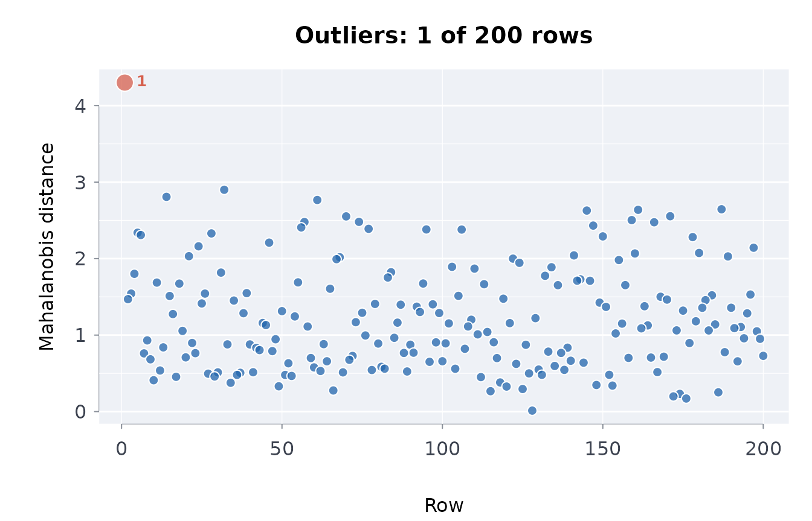
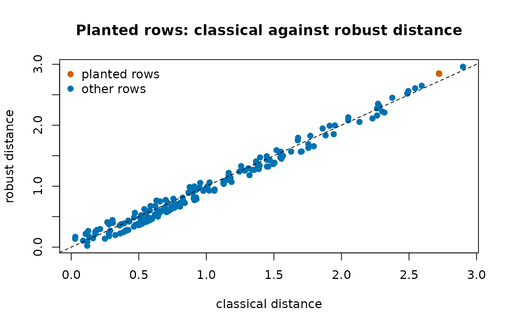

Missingness, duplicates, outliers and distinct counts
Source:vignettes/missingness-and-outliers.Rmd
missingness-and-outliers.RmdBefore a published table is analysed it should be looked at for the four things that most often go wrong in ingestion: missing values with a pattern, duplicated rows, rows that are ordinary on each column but impossible jointly, and identifier columns with fewer distinct values than they should have.
Missingness
df <- data.frame(a = c(1, NA, 3), b = c(NA, NA, 3), c = 1:3)
misssmry(df)
#> n_rows n_cols n_missing pct_missing
#> 3.00000 3.00000 3.00000 33.33333
#> n_complete_rows pct_complete_rows n_cols_any_missing n_cols_all_missing
#> 1.00000 33.33333 2.00000 0.00000
misssmry(data.frame(x = 1:3, y = 4:6))
#> n_rows n_cols n_missing pct_missing
#> 3 2 0 0
#> n_complete_rows pct_complete_rows n_cols_any_missing n_cols_all_missing
#> 3 100 0 0A pattern matters more than a rate: misspat() tabulates
the combinations of missing columns, missruns() finds runs
of consecutive missing rows (a feed that stopped), and
missgrid() draws an inline text map of where the gaps
are.
set.seed(1)
big <- data.frame(id = 1:40, v = stats::rnorm(40), w = stats::rnorm(40))
big$v[c(10:14, 30)] <- NA
big$w[10:14] <- NA
misspat(big)
#> ╭── Missingness patterns ─────────────────────────────────────────────────────╮
#> │ Columns in pattern order: id, v, w │
#> │ Patterns 3 │
#> │ Rows 40 │
#> │ │
#> │ pattern n_rows pctrows n_missing columns │
#> │ ------- ------ ------- --------- ------- │
#> │ ... 34 85.0 0 │
#> │ .XX 5 12.5 2 v, w │
#> │ .X. 1 2.5 1 v │
#> │ │
#> │ Each pattern marks the columns missing together; a few large patterns │
#> │ point to a cause worth naming before rows are dropped. │
#> ╰─────────────────────────────────────────────────────────────────────────────╯
missruns(big)
#> ╭── Runs of consecutive missing values ───────────────────────────────────╮
#> │ Runs 2 │
#> │ Columns with runs 2 │
#> │ Longest run 5 │
#> │ │
#> │ column start end length │
#> │ ------ ----- --- ------ │
#> │ v 10 14 5 │
#> │ w 10 14 5 │
#> │ │
#> │ Long runs of missing rows usually mean a source stopped reporting for │
#> │ a while, not values missing at random. │
#> ╰─────────────────────────────────────────────────────────────────────────╯Five rows missing both v and w in a block
is a different problem from six scattered gaps; the first points at the
source, the second at the records.
Duplicates
d <- data.frame(
id = c(1, 2, 2, 3, 3, 3),
x = c("a", "b", "b", "c", "c", "d"),
stringsAsFactors = FALSE
)
duprows(d)
#> ╭── Duplicate rows ───────────────────────────────────────────────────────────╮
#> │ Table 6 rows, 2 columns │
#> │ Compared on every column │
#> │ Duplicate rows 4 │
#> │ Groups 2 │
#> │ Extra copies 2 │
#> │ │
#> │ 4 rows fall in 2 groups of identical rows: dropping the repeats would │
#> │ remove 2. │
#> │ │
#> │ quiet = TRUE, or suppressMessages(), silences this summary. │
#> ╰─────────────────────────────────────────────────────────────────────────────╯
#> id x dupe_count
#> 1 2 b 2
#> 2 2 b 2
#> 3 3 c 2
#> 4 3 c 2
duprows(d, cols = "id")
#> ╭── Duplicate rows ───────────────────────────────────────────────────────────╮
#> │ Table 6 rows, 2 columns │
#> │ Compared on id │
#> │ Duplicate rows 5 │
#> │ Groups 2 │
#> │ Extra copies 3 │
#> │ │
#> │ 5 rows fall in 2 groups of identical rows: dropping the repeats would │
#> │ remove 3. │
#> │ │
#> │ quiet = TRUE, or suppressMessages(), silences this summary. │
#> ╰─────────────────────────────────────────────────────────────────────────────╯
#> id x dupe_count
#> 1 2 b 2
#> 2 2 b 2
#> 3 3 c 3
#> 4 3 c 3
#> 5 3 d 3Full-row duplicates are usually an ingestion artefact; duplicates on the key alone are usually a data-model finding (the key is not a key).
Multivariate outliers
A row can be inside every column’s range and still be impossible: short and heavy, young and retired. The Mahalanobis distance measures how far a row is from the centre of the joint distribution in the metric of its covariance. The robust version uses the median and the MAD, so a cluster of bad rows cannot drag the centre toward itself and hide:
set.seed(1)
n <- 200
df <- data.frame(height = stats::rnorm(n, 170, 10))
df$weight <- df$height * 0.5 + stats::rnorm(n, 0, 5)
df[1, ] <- list(height = 155, weight = 100) # ordinary on each, unlikely jointly
out <- mahaoutl(df)
head(out, 3)
#> ╭── Mahalanobis outliers (robust) ──────────────────────────────────────╮
#> │ Verdict ! 1 of 3 rows beyond alpha = 0.001 │
#> │ │
#> │ Largest distances first │
#> │ row distance p_value logpvalue outlier │
#> │ --- -------- ------- --------- ------- │
#> │ 1 4.301 < 0.001 -9.250 TRUE │
#> │ 32 2.900 0.015 -4.205 FALSE │
#> │ 14 2.807 0.019 -3.940 FALSE │
#> │ │
#> │ 1 of 3 rows lie beyond alpha = 0.001: row 1 (distance 4.3). │
#> │ │
#> │ The distance measures how far a row is from the centre of the data │
#> │ once the columns' scales and correlations are allowed for; the │
#> │ p-value is from the chi-square distribution it would follow without │
#> │ outliers, and logpvalue its natural log, for rows far in the tail. │
#> ╰───────────────────────────────────────────────────────────────────────╯
out$row[1] == 1
#> [1] TRUE
range(df$height[-1])
#> [1] 147.8530 194.0162
range(df$weight[-1])
#> [1] 67.07546 101.82631With a cluster of bad rows, the classical distance of a bad row is smaller than the robust one, because the cluster has pulled the classical centre toward itself:
bad <- df
bad[2:21, ] <- list(height = 150, weight = 110)
dclassical <- mahaoutl(bad, robust = FALSE)
drobust <- mahaoutl(bad, robust = TRUE)
dclassical$distance[dclassical$row == 2] < drobust$distance[drobust$row == 2]
#> [1] TRUEThe flag threshold is a chi-square quantile
(alpha = 0.001 by default) with the number of columns as
degrees of freedom. A duplicated column has no distance defined and is
refused.
Distinct counts in fixed memory
How many distinct identifiers does a 200-million-row file have? Holding them all in a set needs memory proportional to the answer. A HyperLogLog sketch answers to within about 1% in a few kilobytes, can be fed block by block, and two sketches of two files merge into one:
set.seed(1)
x <- sample(1:5000, 200000, replace = TRUE)
dstncnt(dstnskch(x))
#> [1] 5039.269
length(unique(x))
#> [1] 5000
s <- dstnskch(x[1:100000])
s <- dstnskch(x[100001:200000], regstr = s)
dstncnt(s)
#> [1] 5039.269
a <- dstnskch(x[1:100000])
b <- dstnskch(x[100001:200000])
dstncnt(skchmrg(a, b))
#> [1] 5039.269Small cardinalities are near-exact through linear counting, and an empty input has no distinct values:
dstncnt(dstnskch(c("a", "b", "c", "a", "b")))
#> [1] 3.000275
dstncnt(dstnskch(character(0)))
#> [1] 0An identifier column whose distinct count is far below its row count
is not an identifier; cpsdrft() uses the same reasoning to
decide which columns to compare as categories.
Does the data look fabricated or truncated?
Benford’s law gives the expected distribution of leading digits for a quantity that spans several orders of magnitude; a strong departure is a reason to ask how the numbers were produced (rounding, capping, invention), never a proof of anything on its own:
set.seed(3)
benfordtst(10^stats::runif(2000, 0, 6))$p_value
#> [1] 0.2599175
benfordtst(as.numeric(paste0(sample(1:9, 2000, TRUE), "000")))$p_value
#> [1] 9.672166e-161Order of operations
-
misssmry()andmisspat(); decide whether gaps are structural. -
duprows()on the full row and on the key. -
mahaoutl()on the numeric columns, robust. -
dstnskch()on identifiers when the table is large. - Then, and only then, the analysis.
Suppression in published tables
In a published table, missing values are usually suppression, and the flag says why. On the bundled infant mortality rates by Indigenous identity:
im <- indiex("infantmort")
misssmry(im)
#> n_rows n_cols n_missing pct_missing
#> 18.00000 7.00000 18.00000 14.28571
#> n_complete_rows pct_complete_rows n_cols_any_missing n_cols_all_missing
#> 12.00000 66.66667 3.00000 0.00000
table(im$period, im$quality)
#>
#> .. E ok
#> 1994/1996 6 0 0
#> 2004/2006 0 3 3
#> 2014/2016 0 4 2The 1994/1996 rates are all ..: not available for that
period, not a gap in the file.
The outliers in a picture
On the clean table mahaoutl() flags one row, drawn
first. The second figure puts the two distances side by side for the
table with twenty planted rows: each point is a row, the planted rows in
the accent colour (all twenty have the same values, so they share one
point). That point sits above the diagonal: the robust centre is not
pulled toward the planted rows, so the robust distance places them
further out.
plot(out)
planted <- dclassical$row %in% 2:21
plot(
dclassical$distance,
drobust$distance[match(dclassical$row, drobust$row)],
pch = 19,
col = ifelse(planted, blpal()[2], blpal()[1]),
xlab = "classical distance",
ylab = "robust distance",
main = "Planted rows: classical against robust distance"
)
abline(0, 1, lty = 2)
legend(
"topleft",
c("planted rows", "other rows"),
pch = 19,
col = blpal()[c(2, 1)],
bty = "n"
)